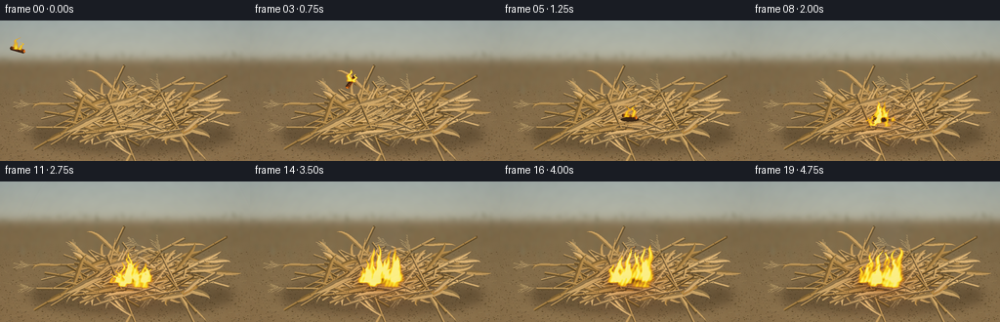
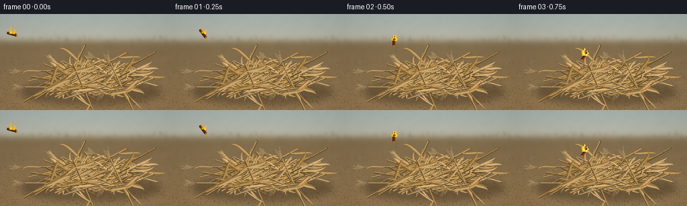

CODING AGENTS AS PIXEL WORLD MODELS
traex/GPT-6.1-Sol · material_0030
点击播放 · 原生 RGB 像素
逐轮保存的候选
回放视频、检查图与代码变化。
每份候选均可单独播放。实际图片检查记录在下方工具轨迹中。
候选 01播放与检查图
点击播放 · 原生 RGB 像素


展开代码变化
--- 上一保存版本
+++ 本次保存版本
@@ -0,0 +1,271 @@
+from pathlib import Path
+import json
+import math
+import numpy as np
+from PIL import Image, ImageDraw, ImageFilter
+from scipy.ndimage import gaussian_filter, map_coordinates
+import artifact_io
+
+ROOT = Path(__file__).resolve().parent
+SPEC = json.loads((ROOT / 'task_spec.json').read_text())
+W, H = SPEC['width'], SPEC['height']
+S = 3
+SW, SH = W*S, H*S
+rng = np.random.default_rng(46123)
+
+def xy(p): return tuple(float(v)*S for v in p)
+def line(d, points, fill, width=1):
+ d.line([xy(p) for p in points], fill=fill, width=max(1,round(width*S)), joint='curve')
+def poly(d, points, fill): d.polygon([xy(p) for p in points], fill=fill)
+def ellipse(d, box, fill): d.ellipse(tuple(v*S for v in box), fill=fill)
+def bezier(p0,p1,p2,p3,n=26):
+ t=np.linspace(0,1,n)[:,None]
+ return (1-t)**3*p0+3*(1-t)**2*t*p1+3*(1-t)*t**2*p2+t**3*p3
+
+# A continuous, softly out-of-focus harvested field behind the foreground pile.
+y,x=np.mgrid[0:SH,0:SW].astype(float); X=x/S; Y=y/S
+noise=rng.normal(0,1,(SH,SW)); coarse=gaussian_filter(noise,7)*14
+sky=np.zeros((SH,SW,3),float)
+for k,(top,bot) in enumerate([(166,186),(177,184),(174,165)]):
+ sky[:,:,k]=top+(bot-top)*np.minimum(Y/42,1)+coarse
+soil=np.zeros_like(sky)
+for k,base in enumerate([129,108,76]):
+ soil[:,:,k]=base+(Y-45)*[.19,.11,.045][k]+coarse*1.4
+blend=1/(1+np.exp(-(Y-40)/2.5))
+arr=sky*(1-blend[:,:,None])+soil*blend[:,:,None]
+base=Image.fromarray(np.uint8(np.clip(arr,0,255)))
+bd=ImageDraw.Draw(base)
+# Faint irregular horizon scrub, dry grass and receding stubble.
+for i in range(280):
+ px=rng.uniform(-3,259); py=rng.uniform(35,79)
+ ht=rng.uniform(2,9)*(py/70)
+ c=tuple(int(z) for z in np.array([116,111,82])+rng.uniform(-18,20))
+ line(bd,[(px,py),(px+rng.uniform(-2,2),py-ht)],c,rng.uniform(.25,.65))
+ if i%3==0:
+ line(bd,[(px,py-ht*.3),(px+3,py-ht*.8)],c,.3)
+base=base.filter(ImageFilter.GaussianBlur(1.8*S))
+# Granular, uneven earth with stones, old plant debris and tiny shadows.
+arr=np.array(base).astype(float)
+groundmask=np.clip((Y-64)/35,0,1)
+grains=rng.normal(0,2.3,(SH,SW))*groundmask
+arr+=grains[:,:,None]
+base=Image.fromarray(np.uint8(np.clip(arr,0,255)))
+bd=ImageDraw.Draw(base)
+for i in range(2800):
+ px=rng.uniform(0,W); py=rng.uniform(71,H)
+ r=rng.uniform(.12,.7)*(py/H)
+ col=np.array([118,96,64])+rng.uniform(-29,28)
+ ellipse(bd,(px,py,px+r*1.8,py+r*.65),tuple(np.uint8(np.clip(col,0,255))))
+for i in range(135):
+ px=rng.uniform(0,W); py=rng.uniform(76,H); le=rng.uniform(2,12)
+ line(bd,[(px,py),(px+le,py+rng.uniform(-3,3))],(155,130,87),.35)
+shadow=Image.new('RGBA',(SW,SH)); sd=ImageDraw.Draw(shadow)
+ellipse(sd,(31,99,239,135),(42,31,17,95))
+ellipse(sd,(52,101,224,129),(35,27,16,80))
+shadow=shadow.filter(ImageFilter.GaussianBlur(5*S))
+base=Image.alpha_composite(base.convert('RGBA'),shadow).convert('RGB')
+
+pile=Image.new('RGBA',(SW,SH)); pd=ImageDraw.Draw(pile)
+
+def leaf(d,p,v,length,width,bend,color):
+ """Folded dried maize leaf: an arched ribbon with a pointed frayed end."""
+ v=np.array(v,float); v=v/np.linalg.norm(v); nv=np.array([-v[1],v[0]])
+ p=np.array(p)
+ pts=bezier(p,p+v*length*.33+nv*bend*.15,p+v*length*.78+nv*bend,p+v*length+nv*bend*.65,32)
+ tang=np.gradient(pts,axis=0); norms=np.stack([-tang[:,1],tang[:,0]],axis=1)
+ norms/=np.maximum(.01,np.linalg.norm(norms,axis=1))[:,None]
+ t=np.linspace(0,1,len(pts)); widths=width*np.sin(np.pi*t)**.85*(1-.42*t)
+ a=pts+norms*widths[:,None]*.52; b=pts-norms*widths[:,None]*.48
+ dark=tuple(max(0,int(z*.77)) for z in color)
+ light=tuple(min(255,int(z*1.10+3)) for z in color)
+ poly(d,np.vstack([a,b[::-1]]),color)
+ poly(d,np.vstack([a,pts[::-1]]),light)
+ poly(d,np.vstack([pts,b[::-1]]),dark)
+ line(d,pts,tuple(min(255,int(z*1.2)) for z in color),.25)
+ line(d,b,tuple(int(z*.69) for z in color),.17)
+ # Slim parallel ridges distinguish a dry blade from a plain ribbon.
+ for f in [.25,-.28]:
+ pp=pts+norms*widths[:,None]*f
+ line(d,pp,tuple(int(z*(.89 if f<0 else 1.06)) for z in color),.13)
+
+# Stems and attached dry leaves are laid in depth order across a loose mound.
+stalks=[]
+for i in range(103):
+ centerx=rng.normal(138,36)
+ centery=rng.uniform(80,119)
+ centery-=max(0,1-abs(centerx-140)/80)*rng.uniform(0,10)
+ theta=rng.uniform(-.63,.62)
+ if i%8==0: theta=rng.uniform(-1.2,1.2)
+ length=rng.uniform(29,91)
+ v=np.array([np.cos(theta),np.sin(theta)])
+ p0=np.array([centerx,centery])-v*length/2
+ p1=p0+v*length
+ if min(p0[0],p1[0])<26 or max(p0[0],p1[0])>239: continue
+ stalks.append((centery,p0,p1,length,v,i))
+for cy,p0,p1,L,v,i in sorted(stalks,key=lambda a:a[0]):
+ color=np.array([183,145,86])+rng.uniform(-24,32)
+ color=np.uint8(np.clip(color,0,255)); c=tuple(int(z) for z in color)
+ n=np.array([-v[1],v[0]])
+ wid=rng.uniform(.8,1.85)
+ line(pd,[p0+n*.55,p1+n*.55],tuple(int(z*.56) for z in c),wid+1.0)
+ line(pd,[p0,p1],c,wid)
+ line(pd,[p0-n*wid*.27,p1-n*wid*.27],tuple(min(255,int(z*1.20)) for z in c),wid*.26)
+ # Hollow broken tips and transverse raised stalk joints.
+ ellipse(pd,(p1[0]-.7,p1[1]-.6,p1[0]+.7,p1[1]+.6),tuple(int(z*.62) for z in c))
+ n_nodes=max(2,int(L/14))
+ for j in range(1,n_nodes):
+ p=p0+(p1-p0)*j/n_nodes
+ line(pd,[p-n*wid*.66,p+n*wid*.66],tuple(int(z*.63) for z in c),.6)
+ line(pd,[p-v*.55-n*wid*.6,p-v*.55+n*wid*.6],tuple(min(255,int(z*1.16)) for z in c),.38)
+ if rng.random()<.50:
+ lv=v*(1 if rng.random()<.68 else -1)
+ angle=rng.uniform(-.8,.8)
+ rot=np.array([[np.cos(angle),-np.sin(angle)],[np.sin(angle),np.cos(angle)]])
+ leaf(pd,p,rot@lv,rng.uniform(16,39),rng.uniform(2.2,6.1),rng.uniform(-19,19),c)
+ if i%10==0:
+ # Small branched, straw-colored maize tassels.
+ tip=p0; tv=-v
+ line(pd,[tip,tip+tv*15],(172,141,91),.55)
+ for k in range(7):
+ q=tip+tv*(3+k*1.5)
+ end=q+tv*rng.uniform(5,10)+n*((-1)**k)*rng.uniform(2,5)
+ line(pd,[q,end],(186,157,107),.38)
+ for f in [.25,.5,.7,.9]:
+ a=q+(end-q)*f
+ line(pd,[a,a+tv*1.2+n*.7],(204,174,118),.45)
+
+# A handful of larger, twisted husks visible on the front of the pile.
+for p,v,L,ww,b in [((68,114),(1,-.17),40,8,-12),((161,121),(1,-.45),42,6,10),((111,87),(.8,-.6),31,6,13),((189,109),(.6,.5),27,7,-12)]:
+ leaf(pd,p,v,L,ww,b,(187,151,95))
+# Small weathered ear still in the crop residue, partly covered by its husk.
+cobp=np.array([194.,111.]); ang=-.45
+v=np.array([math.cos(ang),math.sin(ang)]); n=np.array([-v[1],v[0]])
+poly(pd,[cobp-v*9-n*2.2,cobp+v*9-n*1.5,cobp+v*10,cobp+v*8+n*2,cobp-v*8+n*2.4],(153,112,56))
+for j in range(14):
+ for k in range(3):
+ p=cobp+v*(j*1.16-7.8)+n*(k*1.2-1.2)
+ ellipse(pd,(p[0]-.45,p[1]-.43,p[0]+.48,p[1]+.43),(190+(j%3)*7,146+(k%2)*8, seventy:=74))
+leaf(pd,cobp-v*7,v,24,5,-7,(194,158,105))
+scene=Image.alpha_composite(base.convert('RGBA'),pile).convert('RGB')
+
+# Fixed noise textures advected upwards give the fire and smoke temporal coherence.
+noise_grid=rng.normal(0,1,(128,128))
+noise_grid=gaussian_filter(noise_grid,1)
+noise_grid/=noise_grid.std()
+
+def flow_noise(x,y,t,scale=8,speed=10):
+ return map_coordinates(noise_grid,[np.mod((y+t*speed)/scale,128),np.mod((x+t*1.3)/scale,128)],order=1,mode='wrap')
+
+flames=[]
+for j in range(13):
+ flames.append((rng.uniform(-22,22),rng.uniform(-3,6),rng.uniform(21,43),rng.uniform(2.1,4.5),rng.uniform(0,6.28),rng.uniform(.75,1.25)))
+
+def fire_field(t, emitters):
+ density=np.zeros((SH,SW),float)
+ for fx,fy,ht,wd,phase in emitters:
+ h=ht*(1+.11*math.sin(t*7.5+phase)+.07*math.sin(t*15.7+phase*2))
+ u=(fy-Y)/h
+ bend=(2.0*np.sin(u*7-t*8+phase)+1.4*np.sin(u*14-t*12+phase))*np.clip(u,0,1)
+ spine=fx+bend+1.9*u*u
+ width=wd*np.maximum(.055,(1-np.clip(u,0,1))**.74)
+ radial=((X-spine)/width)**2
+ envelope=np.maximum(0,np.minimum(u*12,1))*np.maximum(0,np.minimum((1-u)*7,1))
+ tongue=np.exp(-radial*.75)*envelope
+ turbulence=flow_noise(X,Y,t,3.7,20)
+ tongue*=np.maximum(.02,1+.30*turbulence+.14*np.sin(X*1.6+Y*.7+t*9))
+ density+=tongue
+ return density
+
+# Smoke is a stream of expanding semi-transparent puffs, not a solid cloud.
+puffs=[]
+for j in range(49):
+ puffs.append((1.03+j*.086,rng.uniform(-2,2),rng.uniform(0,6.28),rng.uniform(1.0,1.6)))
+
+def render(frame):
+ t=frame/float(SPEC['fps'])
+ im=scene.copy(); a=np.asarray(im).astype(float)
+ burn=max(0,t-1)
+ if burn>0:
+ scorch=np.exp(-((X-134)/25)**2-((Y-103)/13)**2)*min(.62,burn*.18)
+ # Gradual local charring of the dry foliage.
+ a*=1-scorch[:,:,None]*np.array([.54,.68,.76])
+ light=np.exp(-((X-135)/38)**2-((Y-107)/22)**2)*min(1,burn*.7)
+ a+=light[:,:,None]*np.array([19,6,-2])
+ im=Image.fromarray(np.uint8(np.clip(a,0,255)))
+ # Ballistic motion: a tiny glowing, charred stick enters from the left and lands.
+ if frame<4:
+ q=frame/4
+ wx=18+114*q; wy=30-25*q+92*q*q
+ angle=.25+q*2.6
+ else:
+ wx=132+1.3*min(1,(frame-4)/2); wy=98.0+.9*min(1,(frame-4)/2)
+ angle=.20
+ d=ImageDraw.Draw(im)
+ v=np.array([math.cos(angle),math.sin(angle)]); n=np.array([-v[1],v[0]])
+ p=np.array([wx,wy]); p0=p-v*7; p1=p+v*7
+ if frame>=4:
+ ellipse(d,(wx-9,wy+1,wx+10,wy+5),(57,39,22))
+ poly(d,[p0-n*1.7,p1-n*1.9,p1+v*1.3+n*.3,p1+n*2,p0+n*1.8,p0-v*1],(57,32,19))
+ poly(d,[p0-n*1.7,p1-n*1.9,p1+n*.1,p0+n*.15],(93,49,25))
+ line(d,[p0-n*1.5,p1-n*1.7],(143,69,26),.6)
+ for off in [-4,-.5,3.4,5.6]:
+ pp=p+v*off
+ line(d,[pp-n*1.0,pp+n*.9],(220,79+int(off+5)*3,17),.42)
+ poly(d,[p1-n*1.8,p1+v*1.2,p1+n*1.6,p1-v*.7],(247,122,26))
+ a=np.asarray(im).astype(float)
+ # Gentle gray-brown smoke over the pile and in the cool distant field.
+ opacity=np.zeros((SH,SW),float)
+ for born,offset,phase,factor in puffs:
+ age=t-born
+ if age<0 or age>3.8: continue
+ py=95-age*18
+ px=135+offset+age*4.1+math.sin(age*2+phase)*age*2.2
+ rx=(3+age*7)*factor; ry=(4+age*6.3)*factor
+ puff=np.exp(-((X-px)/rx)**2-((Y-py)/ry)**2)
+ mod=np.clip(.72+.20*flow_noise(X,Y,t,7,5),.2,1.2)
+ opacity+=puff*mod*.027*min(age*4,1)*max(0,1-age/4)
+ opacity=np.clip(opacity,0,.24)
+ smoke_color=np.stack([113+Y*.17,111+Y*.14,100+Y*.13],axis=-1)
+ a=a*(1-opacity[:,:,None])+smoke_color*opacity[:,:,None]
+ if frame<4:
+ em=[(wx-2,wy,12,2.5,1.1),(wx+3,wy+.4,9,1.7,3.8)]
+ else:
+ em=[(wx-3,wy+1,13+min(17,burn*5),2.9,1.2),(wx+4,wy+1,11+min(15,burn*6),2.5,3.9)]
+ for j,(off,yo,hh,ww,phase,fac) in enumerate(flames):
+ delay=.34+abs(off)*.047
+ strength=np.clip((burn-delay)/1.7,0,1)
+ if strength>0:
+ em.append((134+off,104+yo,hh*(.22+.78*strength),ww*(.6+.4*strength),phase))
+ den=fire_field(t,em)
+ alpha=np.clip((den-.09)*1.4,0,.97)
+ # Red transparent edges, saturated orange body, and luminous yellow cores.
+ heat=np.clip(den/1.5,0,1)
+ colors=np.empty_like(a)
+ colors[:,:,0]=255
+ colors[:,:,1]=77+166*np.clip(heat*1.28,0,1)**.65
+ colors[:,:,2]=9+125*np.clip((heat-.35)/.65,0,1)**1.5
+ glow=gaussian_filter(np.maximum(den-.12,0),3.2*S)
+ a+=glow[:,:,None]*np.array([18,6,1])
+ a=a*(1-alpha[:,:,None])+colors*alpha[:,:,None]
+ im=Image.fromarray(np.uint8(np.clip(a,0,255)))
+ # Sparse ascending sparks emphasize combustion without obscuring the stalks.
+ d=ImageDraw.Draw(im)
+ if t>=1:
+ for j in range(16):
+ born=1+j*.235
+ age=t-born
+ if 0<age<1.15:
+ ex=132+math.sin(j*3.1)*13+age*(3+math.sin(j)*6)
+ ey=96-age*(17+j%5*3)
+ line(d,[(ex,ey),(ex-.15,ey+1.0)],(255,186-int(age*64),54),.42)
+ # Very subtle lens falloff, plus downsampling for natural thin stalk edges.
+ a=np.asarray(im).astype(float)
+ vig=1-.075*((X-128)/152)**2-.045*((Y-74)/105)**2
+ a*=vig[:,:,None]
+ out=Image.fromarray(np.uint8(np.clip(a,0,255))).resize((W,H),Image.Resampling.LANCZOS)
+ return np.asarray(out,dtype=np.uint8)
+
+if __name__=='__main__':
+ frames=np.stack([render(i) for i in range(SPEC['frames'])])
+ artifact_io.save(frames,ROOT)
+ print(f'Saved {len(frames)} RGB frames at {W}x{H}, {SPEC["fps"]} fps')
可观测工具轨迹
实际执行的命令与返回图片。
命令 1exit 0
/bin/bash -lc 'ls -la && cat prompt.txt && cat GENERATION_RULES.md && cat task_spec.json'
命令 2exit 0
/bin/bash -lc "cat artifact_io.py && python - <<'PY' import importlib.util for x in ['numpy','PIL','scipy']: print(x, bool(importlib.util.find_spec(x))) PY"
命令 3exit 0
/bin/bash -lc "cat > generate.py <<'PY'
from pathlib import Path
import json
import math
import numpy as np
from PIL import Image, ImageDraw, ImageFilter
from scipy.ndimage import gaussian_filter, map_coordinates
import artifact_io
ROOT = Path(__file__).resolve().parent
SPEC = json.loads((ROOT / 'task_spec.json').read_text())
W, H = SPEC['width'], SPEC['height']
S = 3
SW, SH = W*S, H*S
rng = np.random.default_rng(46123)
def xy(p): return tuple(float(v)*S for v in p)
def line(d, points, fill, width=1):
d.line([xy(p) for p in points], fill=fill, width=max(1,round(width*S)), joint='curve')
def poly(d, points, fill): d.polygon([xy(p) for p in points], fill=fill)
def ellipse(d, box, fill): d.ellipse(tuple(v*S for v in box), fill=fill)
def bezier(p0,p1,p2,p3,n=26):
t=np.linspace(0,1,n)[:,None]
return (1-t)**3*p0+3*(1-t)**2*t*p1+3*(1-t)*t**2*p2+t**3*p3
# A continuous, softly out-of-focus harvested field behind the foreground pile.
y,x=np.mgrid[0:SH,0:SW].astype(float); X=x/S; Y=y/S
noise=rng.normal(0,1,(SH,SW)); coarse=gaussian_filter(noise,7)*14
sky=np.zeros((SH,SW,3),float)
for k,(top,bot) in enumerate([(166,186),(177,184),(174,165)]):
sky[:,:,k]=top+(bot-top)*np.minimum(Y/42,1)+coarse
soil=np.zeros_like(sky)
for k,base in enumerate([129,108,76]):
soil[:,:,k]=base+(Y-45)*[.19,.11,.045][k]+coarse*1.4
blend=1/(1+np.exp(-(Y-40)/2.5))
arr=sky*(1-blend[:,:,None])+soil*blend[:,:,None]
base=Image.fromarray(np.uint8(np.clip(arr,0,255)))
bd=ImageDraw.Draw(base)
# Faint irregular horizon scrub, dry grass and receding stubble.
for i in range(280):
px=rng.uniform(-3,259); py=rng.uniform(35,79)
ht=rng.uniform(2,9)*(py/70)
c=tuple(int(z) for z in np.array([116,111,82])+rng.uniform(-18,20))
line(bd,[(px,py),(px+rng.uniform(-2,2),py-ht)],c,rng.uniform(.25,.65))
if i%3==0:
line(bd,[(px,py-ht*.3),(px+3,py-ht*.8)],c,.3)
base=base.filter(ImageFilter.GaussianBlur(1.8*S))
# Granular, uneven earth with stones, old plant debris and tiny shadows.
arr=np.array(base).astype(float)
groundmask=np.clip((Y-64)/35,0,1)
grains=rng.normal(0,2.3,(SH,SW))*groundmask
arr+=grains[:,:,None]
base=Image.fromarray(np.uint8(np.clip(arr,0,255)))
bd=ImageDraw.Draw(base)
for i in range(2800):
px=rng.uniform(0,W); py=rng.uniform(71,H)
r=rng.uniform(.12,.7)*(py/H)
col=np.array([118,96,64])+rng.uniform(-29,28)
ellipse(bd,(px,py,px+r*1.8,py+r*.65),tuple(np.uint8(np.clip(col,0,255))))
for i in range(135):
px=rng.uniform(0,W); py=rng.uniform(76,H); le=rng.uniform(2,12)
line(bd,[(px,py),(px+le,py+rng.uniform(-3,3))],(155,130,87),.35)
shadow=Image.new('RGBA',(SW,SH)); sd=ImageDraw.Draw(shadow)
ellipse(sd,(31,99,239,135),(42,31,17,95))
ellipse(sd,(52,101,224,129),(35,27,16,80))
shadow=shadow.filter(ImageFilter.GaussianBlur(5*S))
base=Image.alpha_composite(base.convert('RGBA'),shadow).convert('RGB')
pile=Image.new('RGBA',(SW,SH)); pd=ImageDraw.Draw(pile)
def leaf(d,p,v,length,width,bend,color):
\"\"\"Folded dried maize leaf: an arched ribbon with a pointed frayed end.\"\"\"
v=np.array(v,float); v=v/np.linalg.norm(v); nv=np.array([-v[1],v[0]])
p=np.array(p)
pts=bezier(p,p+v*length*.33+nv*bend*.15,p+v*length*.78+nv*bend,p+v*length+nv*bend*.65,32)
tang=np.gradient(pts,axis=0); norms=np.stack([-tang[:,1],tang[:,0]],axis=1)
norms/=np.maximum(.01,np.linalg.norm(norms,axis=1))[:,None]
t=np.linspace(0,1,len(pts)); widths=width*np.sin(np.pi*t)**.85*(1-.42*t)
a=pts+norms*widths[:,None]*.52; b=pts-norms*widths[:,None]*.48
dark=tuple(max(0,int(z*.77)) for z in color)
light=tuple(min(255,int(z*1.10+3)) for z in color)
poly(d,np.vstack([a,b[::-1]]),color)
poly(d,np.vstack([a,pts[::-1]]),light)
poly(d,np.vstack([pts,b[::-1]]),dark)
line(d,pts,tuple(min(255,int(z*1.2)) for z in color),.25)
line(d,b,tuple(int(z*.69) for z in color),.17)
# Slim parallel ridges distinguish a dry blade from a plain ribbon.
for f in [.25,-.28]:
pp=pts+norms*widths[:,None]*f
line(d,pp,tuple(int(z*(.89 if f<0 else 1.06)) for z in color),.13)
# Stems and attached dry leaves are laid in depth order across a loose mound.
stalks=[]
for i in range(103):
centerx=rng.normal(138,36)
centery=rng.uniform(80,119)
centery-=max(0,1-abs(centerx-140)/80)*rng.uniform(0,10)
theta=rng.uniform(-.63,.62)
if i%8==0: theta=rng.uniform(-1.2,1.2)
length=rng.uniform(29,91)
v=np.array([np.cos(theta),np.sin(theta)])
p0=np.array([centerx,centery])-v*length/2
p1=p0+v*length
if min(p0[0],p1[0])<26 or max(p0[0],p1[0])>239: continue
stalks.append((centery,p0,p1,length,v,i))
for cy,p0,p1,L,v,i in sorted(stalks,key=lambda a:a[0]):
color=np.array([183,145,86])+rng.uniform(-24,32)
color=np.uint8(np.clip(color,0,255)); c=tuple(int(z) for z in color)
n=np.array([-v[1],v[0]])
wid=rng.uniform(.8,1.85)
line(pd,[p0+n*.55,p1+n*.55],tuple(int(z*.56) for z in c),wid+1.0)
line(pd,[p0,p1],c,wid)
line(pd,[p0-n*wid*.27,p1-n*wid*.27],tuple(min(255,int(z*1.20)) for z in c),wid*.26)
# Hollow broken tips and transverse raised stalk joints.
ellipse(pd,(p1[0]-.7,p1[1]-.6,p1[0]+.7,p1[1]+.6),tuple(int(z*.62) for z in c))
n_nodes=max(2,int(L/14))
for j in range(1,n_nodes):
p=p0+(p1-p0)*j/n_nodes
line(pd,[p-n*wid*.66,p+n*wid*.66],tuple(int(z*.63) for z in c),.6)
line(pd,[p-v*.55-n*wid*.6,p-v*.55+n*wid*.6],tuple(min(255,int(z*1.16)) for z in c),.38)
if rng.random()<.50:
lv=v*(1 if rng.random()<.68 else -1)
angle=rng.uniform(-.8,.8)
rot=np.array([[np.cos(angle),-np.sin(angle)],[np.sin(angle),np.cos(angle)]])
leaf(pd,p,rot@lv,rng.uniform(16,39),rng.uniform(2.2,6.1),rng.uniform(-19,19),c)
if i%10==0:
# Small branched, straw-colored maize tassels.
tip=p0; tv=-v
line(pd,[tip,tip+tv*15],(172,141,91),.55)
for k in range(7):
q=tip+tv*(3+k*1.5)
end=q+tv*rng.uniform(5,10)+n*((-1)**k)*rng.uniform(2,5)
line(pd,[q,end],(186,157,107),.38)
for f in [.25,.5,.7,.9]:
a=q+(end-q)*f
line(pd,[a,a+tv*1.2+n*.7],(204,174,118),.45)
# A handful of larger, twisted husks visible on the front of the pile.
for p,v,L,ww,b in [((68,114),(1,-.17),40,8,-12),((161,121),(1,-.45),42,6,10),((111,87),(.8,-.6),31,6,13),((189,109),(.6,.5),27,7,-12)]:
leaf(pd,p,v,L,ww,b,(187,151,95))
# Small weathered ear still in the crop residue, partly covered by its husk.
cobp=np.array([194.,111.]); ang=-.45
v=np.array([math.cos(ang),math.sin(ang)]); n=np.array([-v[1],v[0]])
poly(pd,[cobp-v*9-n*2.2,cobp+v*9-n*1.5,cobp+v*10,cobp+v*8+n*2,cobp-v*8+n*2.4],(153,112,56))
for j in range(14):
for k in range(3):
p=cobp+v*(j*1.16-7.8)+n*(k*1.2-1.2)
ellipse(pd,(p[0]-.45,p[1]-.43,p[0]+.48,p[1]+.43),(190+(j%3)*7,146+(k%2)*8, seventy:=74))
leaf(pd,cobp-v*7,v,24,5,-7,(194,158,105))
scene=Image.alpha_composite(base.convert('RGBA'),pile).convert('RGB')
# Fixed noise textures advected upwards give the fire and smoke temporal coherence.
noise_grid=rng.normal(0,1,(128,128))
noise_grid=gaussian_filter(noise_grid,1)
noise_grid/=noise_grid.std()
def flow_noise(x,y,t,scale=8,speed=10):
return map_coordinates(noise_grid,[np.mod((y+t*speed)/scale,128),np.mod((x+t*1.3)/scale,128)],order=1,mode='wrap')
flames=[]
for j in range(13):
flames.append((rng.uniform(-22,22),rng.uniform(-3,6),rng.uniform(21,43),rng.uniform(2.1,4.5),rng.uniform(0,6.28),rng.uniform(.75,1.25)))
def fire_field(t, emitters):
density=np.zeros((SH,SW),float)
for fx,fy,ht,wd,phase in emitters:
h=ht*(1+.11*math.sin(t*7.5+phase)+.07*math.sin(t*15.7+phase*2))
u=(fy-Y)/h
bend=(2.0*np.sin(u*7-t*8+phase)+1.4*np.sin(u*14-t*12+phase))*np.clip(u,0,1)
spine=fx+bend+1.9*u*u
width=wd*np.maximum(.055,(1-np.clip(u,0,1))**.74)
radial=((X-spine)/width)**2
envelope=np.maximum(0,np.minimum(u*12,1))*np.maximum(0,np.minimum((1-u)*7,1))
tongue=np.exp(-radial*.75)*envelope
turbulence=flow_noise(X,Y,t,3.7,20)
tongue*=np.maximum(.02,1+.30*turbulence+.14*np.sin(X*1.6+Y*.7+t*9))
density+=tongue
return density
# Smoke is a stream of expanding semi-transparent puffs, not a solid cloud.
puffs=[]
for j in range(49):
puffs.append((1.03+j*.086,rng.uniform(-2,2),rng.uniform(0,6.28),rng.uniform(1.0,1.6)))
def render(frame):
t=frame/float(SPEC['fps'])
im=scene.copy(); a=np.asarray(im).astype(float)
burn=max(0,t-1)
if burn>0:
scorch=np.exp(-((X-134)/25)**2-((Y-103)/13)**2)*min(.62,burn*.18)
# Gradual local charring of the dry foliage.
a*=1-scorch[:,:,None]*np.array([.54,.68,.76])
light=np.exp(-((X-135)/38)**2-((Y-107)/22)**2)*min(1,burn*.7)
a+=light[:,:,None]*np.array([19,6,-2])
im=Image.fromarray(np.uint8(np.clip(a,0,255)))
# Ballistic motion: a tiny glowing, charred stick enters from the left and lands.
if frame<4:
q=frame/4
wx=18+114*q; wy=30-25*q+92*q*q
angle=.25+q*2.6
else:
wx=132+1.3*min(1,(frame-4)/2); wy=98.0+.9*min(1,(frame-4)/2)
angle=.20
d=ImageDraw.Draw(im)
v=np.array([math.cos(angle),math.sin(angle)]); n=np.array([-v[1],v[0]])
p=np.array([wx,wy]); p0=p-v*7; p1=p+v*7
if frame>=4:
ellipse(d,(wx-9,wy+1,wx+10,wy+5),(57,39,22))
poly(d,[p0-n*1.7,p1-n*1.9,p1+v*1.3+n*.3,p1+n*2,p0+n*1.8,p0-v*1],(57,32,19))
poly(d,[p0-n*1.7,p1-n*1.9,p1+n*.1,p0+n*.15],(93,49,25))
line(d,[p0-n*1.5,p1-n*1.7],(143,69,26),.6)
for off in [-4,-.5,3.4,5.6]:
pp=p+v*off
line(d,[pp-n*1.0,pp+n*.9],(220,79+int(off+5)*3,17),.42)
poly(d,[p1-n*1.8,p1+v*1.2,p1+n*1.6,p1-v*.7],(247,122,26))
a=np.asarray(im).astype(float)
# Gentle gray-brown smoke over the pile and in the cool distant field.
opacity=np.zeros((SH,SW),float)
for born,offset,phase,factor in puffs:
age=t-born
if age<0 or age>3.8: continue
py=95-age*18
px=135+offset+age*4.1+math.sin(age*2+phase)*age*2.2
rx=(3+age*7)*factor; ry=(4+age*6.3)*factor
puff=np.exp(-((X-px)/rx)**2-((Y-py)/ry)**2)
mod=np.clip(.72+.20*flow_noise(X,Y,t,7,5),.2,1.2)
opacity+=puff*mod*.027*min(age*4,1)*max(0,1-age/4)
opacity=np.clip(opacity,0,.24)
smoke_color=np.stack([113+Y*.17,111+Y*.14,100+Y*.13],axis=-1)
a=a*(1-opacity[:,:,None])+smoke_color*opacity[:,:,None]
if frame<4:
em=[(wx-2,wy,12,2.5,1.1),(wx+3,wy+.4,9,1.7,3.8)]
else:
em=[(wx-3,wy+1,13+min(17,burn*5),2.9,1.2),(wx+4,wy+1,11+min(15,burn*6),2.5,3.9)]
for j,(off,yo,hh,ww,phase,fac) in enumerate(flames):
delay=.34+abs(off)*.047
strength=np.clip((burn-delay)/1.7,0,1)
if strength>0:
em.append((134+off,104+yo,hh*(.22+.78*strength),ww*(.6+.4*strength),phase))
den=fire_field(t,em)
alpha=np.clip((den-.09)*1.4,0,.97)
# Red transparent edges, saturated orange body, and luminous yellow cores.
heat=np.clip(den/1.5,0,1)
colors=np.empty_like(a)
colors[:,:,0]=255
colors[:,:,1]=77+166*np.clip(heat*1.28,0,1)**.65
colors[:,:,2]=9+125*np.clip((heat-.35)/.65,0,1)**1.5
glow=gaussian_filter(np.maximum(den-.12,0),3.2*S)
a+=glow[:,:,None]*np.array([18,6,1])
a=a*(1-alpha[:,:,None])+colors*alpha[:,:,None]
im=Image.fromarray(np.uint8(np.clip(a,0,255)))
# Sparse ascending sparks emphasize combustion without obscuring the stalks.
d=ImageDraw.Draw(im)
if t>=1:
for j in range(16):
born=1+j*.235
age=t-born
if 0<age<1.15:
ex=132+math.sin(j*3.1)*13+age*(3+math.sin(j)*6)
ey=96-age*(17+j%5*3)
line(d,[(ex,ey),(ex-.15,ey+1.0)],(255,186-int(age*64),54),.42)
# Very subtle lens falloff, plus downsampling for natural thin stalk edges.
a=np.asarray(im).astype(float)
vig=1-.075*((X-128)/152)**2-.045*((Y-74)/105)**2
a*=vig[:,:,None]
out=Image.fromarray(np.uint8(np.clip(a,0,255))).resize((W,H),Image.Resampling.LANCZOS)
return np.asarray(out,dtype=np.uint8)
if __name__=='__main__':
frames=np.stack([render(i) for i in range(SPEC['frames'])])
artifact_io.save(frames,ROOT)
print(f'Saved {len(frames)} RGB frames at {W}x{H}, {SPEC[\"fps\"]} fps')
PY
python generate.py"命令 4exit 0
/bin/bash -lc "python - <<'PY'
from pathlib import Path
import numpy as np
from PIL import Image
p=Path('.')
a=np.load(p/'pixels.npz')['pixels']
assert a.shape==(144,256,20)
images=sorted((p/'frames').glob('*.png'))
assert len(images)==20
for f in images:
im=Image.open(f)
assert im.mode=='RGB' and im.size==(256,144)
for f in ['generate.py','pixels.npz','index.html','inspection.png','transition_check.png']:
assert (p/f).is_file()
print(f, (p/f).stat().st_size)
print('Validated all required artifacts.')
PY"保存候选 1 份；完成命令 4 次；可验证图片返回 0 张。原始 API 响应与完整日志保留在本地。